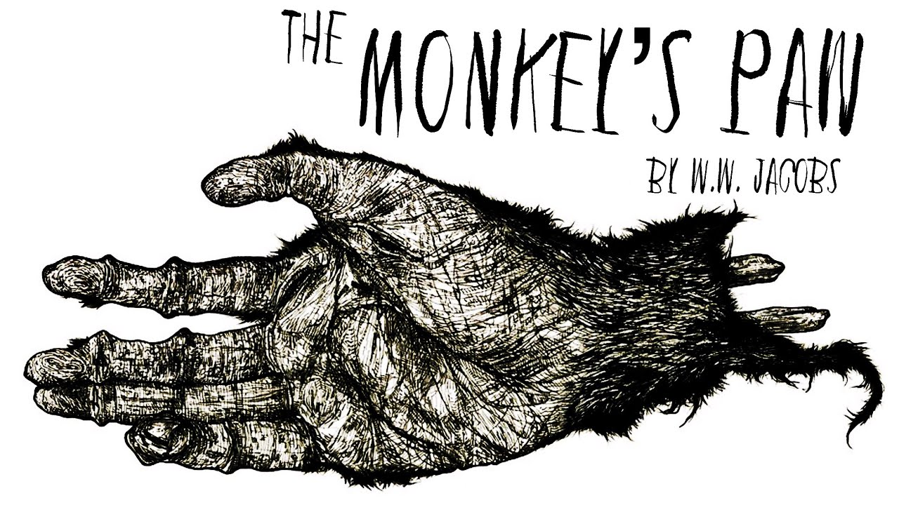
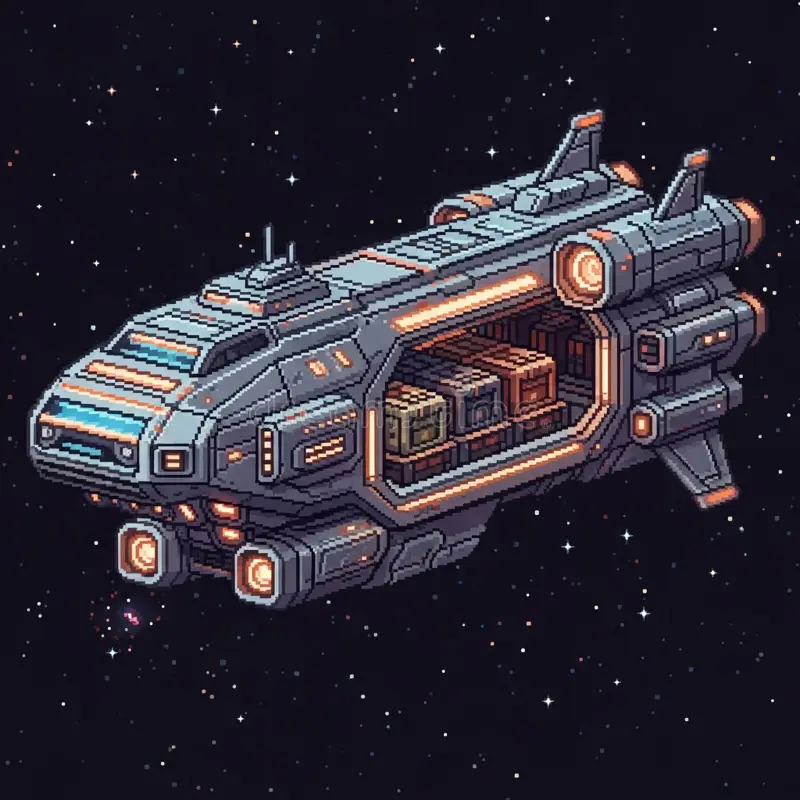

The Off Stranger
The Off Stranger | Horror/True Story |Medium. /p>
Two men excited to watch the World Cup at the bar encounter a weird and unsettling stranger.
Read PDF
What to Give for a Boon

What to Give for a Boon | Horror/True Story |Long. /p>
A man seriously injures himself and is upset when he realises that he will never be
able to play sport again. That is, until he meets a being that offers the impossible,
and for such a minor price.
Read PDF
A Quick Week
A Quick Week| Psychological |Medium. /p>
Civilians of a galactic empire are transported to a historical time period and are forced to
engage with a cruel dilemma.
Read PDF
Bound to the Rotation

Bound to the Rotation | Sci Fi/Psychological |Long. /p>
A woman of the Church must witness the trials of those who have left Earth, never to return.
Read PDF
A Royal Game
A Royal Game | Dark Satire |Long. /p>
Two assassins must survive the eccentric games of an erratic all-powerful being.
Read PDF